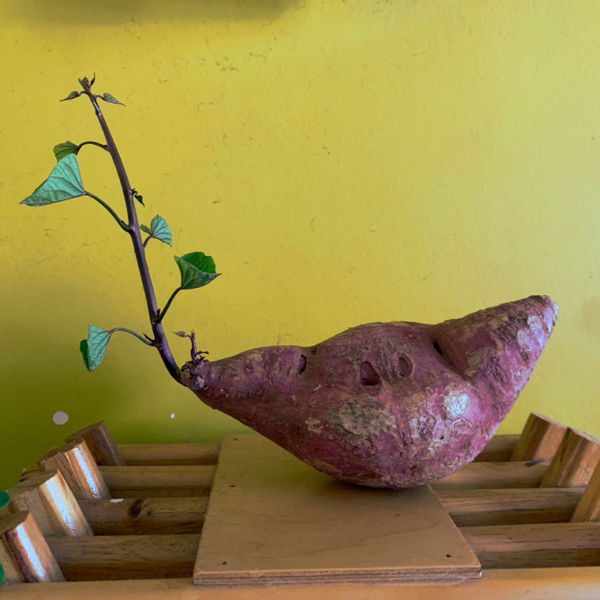
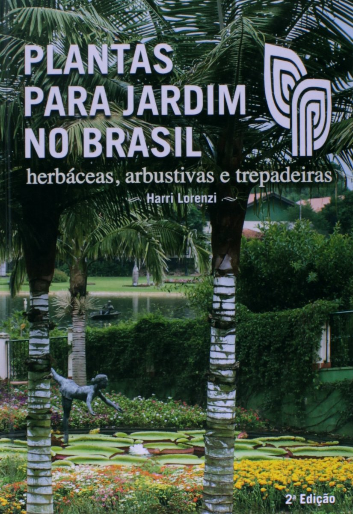
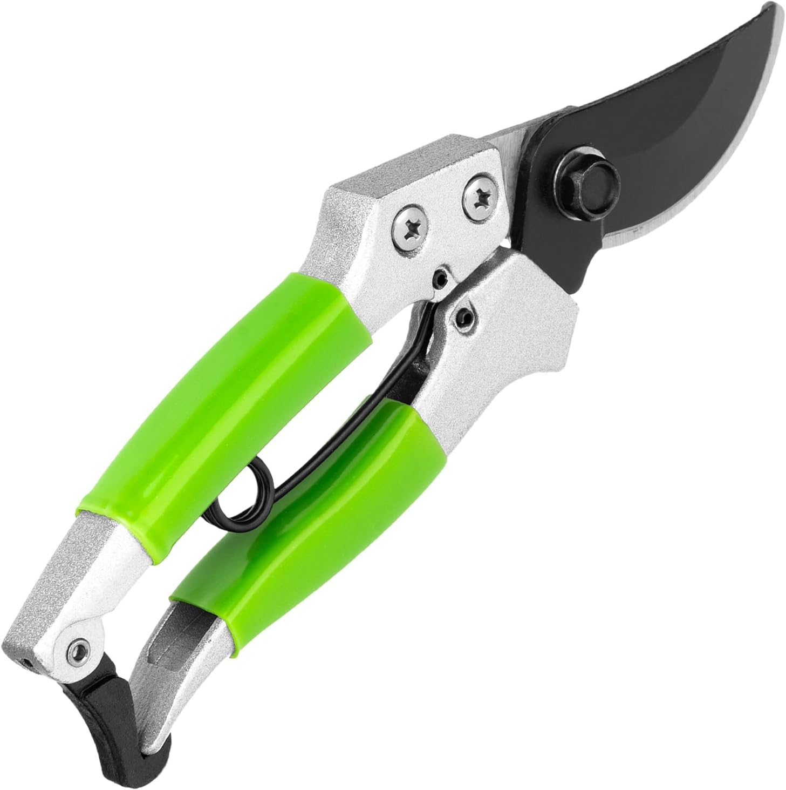
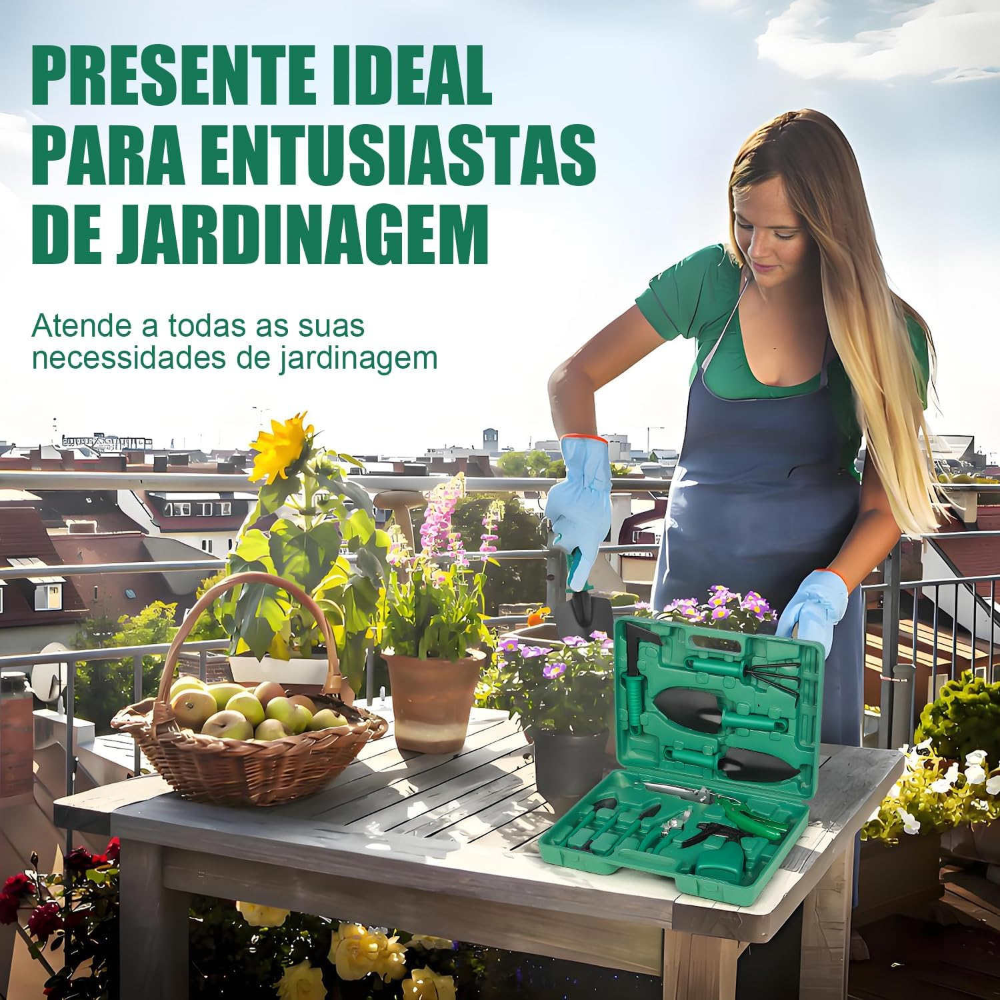
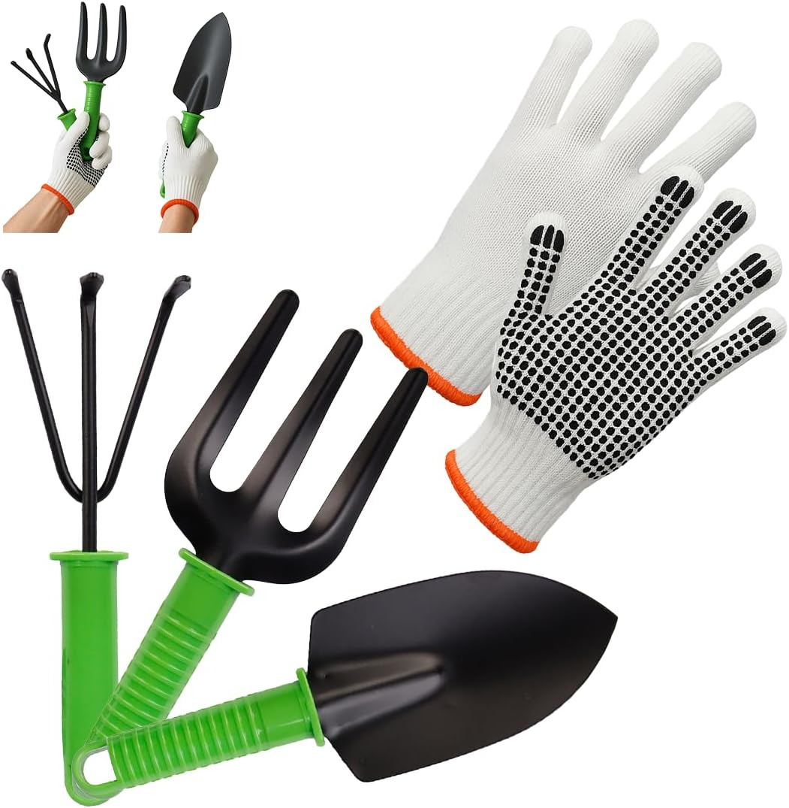
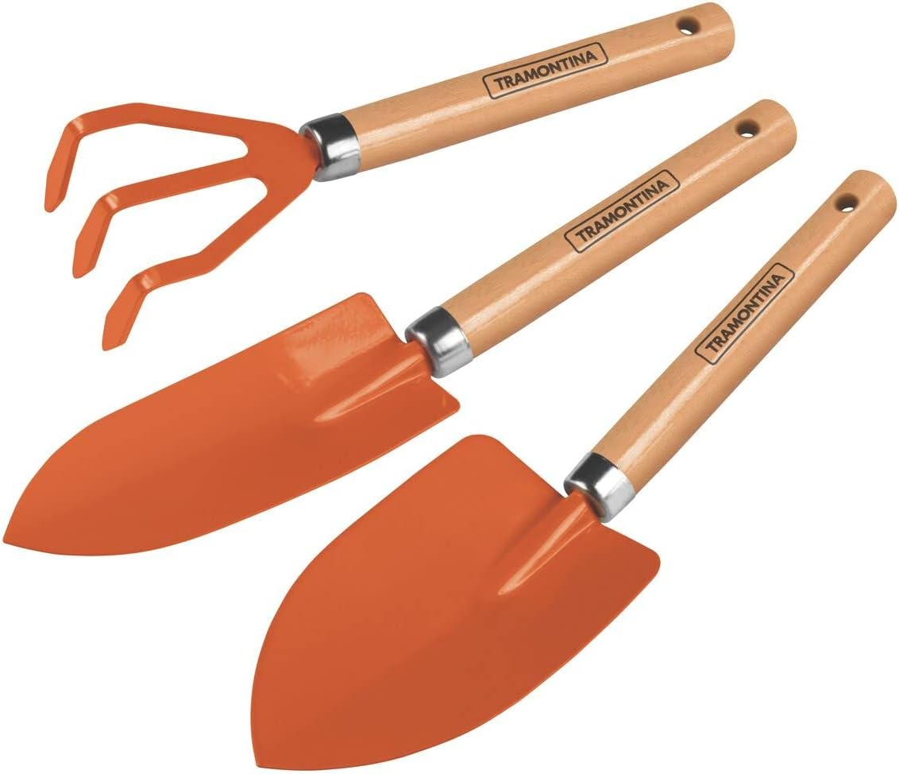

Batata-doce: Da Horta à Decoração

Aquela batata-doce solitária na sua cozinha é, na verdade, uma futura trepadeira com potencial decorativo incrível. A Ipomoea batatas, nome científico da planta, vai muito além da mesa: suas ramas criam uma cascata de folhas vibrantes em formato de coração, trazendo um charme inesperado e vida para qualquer espaço.
Por que Cultivar Batata-Doce é uma Ótima Ideia?
Perfeita para quem quer iniciar na jardinagem, a batata-doce é uma planta comestível, nutritiva e extremamente fácil de cuidar. Ela se adapta tanto ao cultivo em água quanto em solo e pede pouquíssimo esforço, tornando-se a escolha ideal para um projeto "faça você mesmo" sem complicações.
Guia Rápido para Plantar
Quando começa a brotar, basta cortar a batata ao meio e colocá-la em um recipiente com água (parte cortada para baixo). Troque a água a cada poucos dias até que as raízes se formem. Depois, transfira para um vaso com solo fértil ou mantenha na água como planta ornamental.
Cuidados Básicos
- Luz: Prefere luz indireta e ambientes bem iluminados.
- Água: Troque a água regularmente ou mantenha o solo úmido sem encharcar.
- Espaço: A trepadeira se espalha e pode ser conduzida em suportes ou cercas.
Flores Raras e Encanto Extra
A melhor parte? Se você tiver sorte e os cuidados forem ideais, sua planta pode te presentear com delicadas flores lilases e arroxeadas, que se assemelham a pequenas campânulas. Um bônus surpreendente que prova que, na jardinagem, as melhores recompensas vêm das surpresas mais simples.
Produtos indicados
Fisiologia do Desenvolvimento Vegetal
Obra fundamental para entender o crescimento e desenvolvimento das plantas.
Comprar
Plantas do Brasil
Referência essencial sobre a diversidade de plantas herbáceas e arbustivas brasileiras.
Comprar
Tesoura para Poda Manual com Trava
Ferramenta de corte precisa, segura e confortável para manter suas plantas sempre bem cuidadas.
Comprar
Kit Jardinagem com Maleta
Conjunto completo com ferramentas resistentes e maleta organizadora. Ideal para quem cultiva em casa.
Comprar
Kit Jardinagem com Luvas
Ferramentas ergonômicas com proteção para as mãos. Perfeito para jardineiras iniciantes e cuidadosas.
Comprar
Pulverizador de Compressão Tramontina
Prático para aplicação de água, fertilizantes ou defensivos naturais com controle de jato e alça anatômica.
Comprar